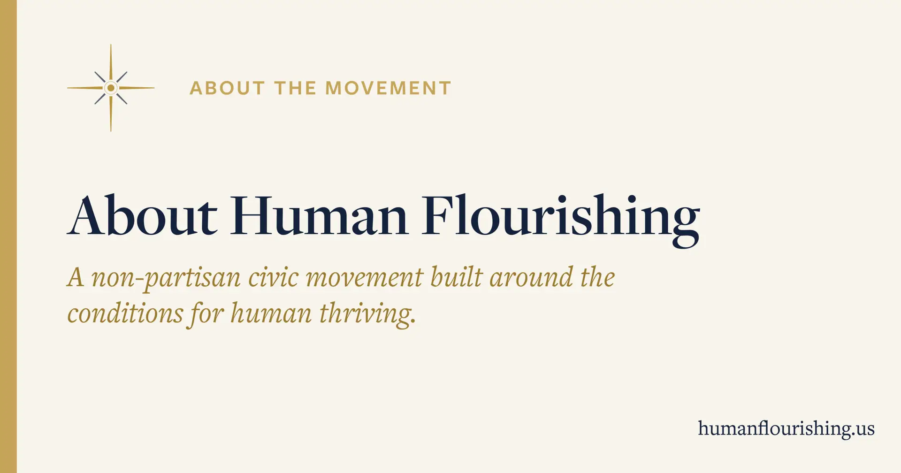

Community spotlight
Human Flourishing
What helps people thrive, and how do families, communities, and institutions shape those conditions? Human Flourishing is a nonpartisan civic movement that brings research and philosophy into that conversation.
Its essays explore the evidence and open questions. Its Circles, gatherings, and Practice of Dialogue help people with different views explore those questions together.
Explore Human Flourishing’s work
Image source: Human Flourishing